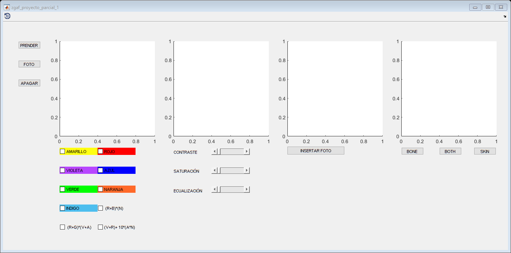

function varargout = zgaf_proyecto_parcial_1(varargin) % ZGAF_PROYECTO_PARCIAL_1 MATLAB code for zgaf_proyecto_parcial_1.fig % ZGAF_PROYECTO_PARCIAL_1, by itself, creates a new ZGAF_PROYECTO_PARCIAL_1 or raises the existing % singleton*. % % H = ZGAF_PROYECTO_PARCIAL_1 returns the handle to a new ZGAF_PROYECTO_PARCIAL_1 or the handle to % the existing singleton*. % % ZGAF_PROYECTO_PARCIAL_1('CALLBACK',hObject,eventData,handles,...) calls the local % function named CALLBACK in ZGAF_PROYECTO_PARCIAL_1.M with the given input arguments. % % ZGAF_PROYECTO_PARCIAL_1('Property','Value',...) creates a new ZGAF_PROYECTO_PARCIAL_1 or raises the % existing singleton*. Starting from the left, property value pairs are % applied to the GUI before zgaf_proyecto_parcial_1_OpeningFcn gets called. An % unrecognized property name or invalid value makes property application % stop. All inputs are passed to zgaf_proyecto_parcial_1_OpeningFcn via varargin. % % *See GUI Options on GUIDE's Tools menu. Choose "GUI allows only one % instance to run (singleton)". % % See also: GUIDE, GUIDATA, GUIHANDLES % Edit the above text to modify the response to help zgaf_proyecto_parcial_1 % Last Modified by GUIDE v2.5 12-Sep-2020 10:57:03 % Begin initialization code - DO NOT EDIT gui_Singleton = 1; gui_State = struct('gui_Name', mfilename, ... 'gui_Singleton', gui_Singleton, ... 'gui_OpeningFcn', @zgaf_proyecto_parcial_1_OpeningFcn, ... 'gui_OutputFcn', @zgaf_proyecto_parcial_1_OutputFcn, ... 'gui_LayoutFcn', [] , ... 'gui_Callback', []); if nargin && ischar(varargin{1}) gui_State.gui_Callback = str2func(varargin{1}); end if nargout [varargout{1:nargout}] = gui_mainfcn(gui_State, varargin{:}); else gui_mainfcn(gui_State, varargin{:}); end % End initialization code - DO NOT EDIT % --- Executes just before zgaf_proyecto_parcial_1 is made visible. function zgaf_proyecto_parcial_1_OpeningFcn(hObject, eventdata, handles, varargin) % This function has no output args, see OutputFcn. % hObject handle to figure % eventdata reserved - to be defined in a future version of MATLAB % handles structure with handles and user data (see GUIDATA) % varargin command line arguments to zgaf_proyecto_parcial_1 (see VARARGIN) % Choose default command line output for zgaf_proyecto_parcial_1 handles.output = hObject; % Update handles structure guidata(hObject, handles); % UIWAIT makes zgaf_proyecto_parcial_1 wait for user response (see UIRESUME) % uiwait(handles.figure1); % --- Outputs from this function are returned to the command line. function varargout = zgaf_proyecto_parcial_1_OutputFcn(hObject, eventdata, handles) % varargout cell array for returning output args (see VARARGOUT); % hObject handle to figure % eventdata reserved - to be defined in a future version of MATLAB % handles structure with handles and user data (see GUIDATA) % Get default command line output from handles structure varargout{1} = handles.output; % --- Executes on button press in btnTurnOn. function btnTurnOn_Callback(hObject, eventdata, handles) % hObject handle to btnTurnOn (see GCBO) % eventdata reserved - to be defined in a future version of MATLAB % handles structure with handles and user data (see GUIDATA) imaqreset a=videoinput('winvideo',1, 'MJPG_1280x720'); axes(handles.imgPhoto); hImage = image(zeros(656,1184,3),'parent',handles.imgPhoto); preview(a,hImage) % --- Executes on button press in btnTakePicture. function btnTakePicture_Callback(hObject, eventdata, handles) % hObject handle to btnTakePicture (see GCBO) % eventdata reserved - to be defined in a future version of MATLAB % handles structure with handles and user data (see GUIDATA) imaqreset a=videoinput('winvideo',1, 'MJPG_1280x720'); axes(handles.imgPhoto); Imagen = getsnapshot(a); handles.imagen=Imagen; handles.filto = Imagen; guidata(hObject,handles); image(handles.imagen); axes(handles.imgToProcess); image(handles.imagen); handles.A=handles.imagen; handles.A(:,:,1); handles.A(:,:,2); handles.A(:,:,3)=0; handles.R=handles.imagen; handles.R(:,:,1); handles.R(:,:,2)=0; handles.R(:,:,3)=0; handles.V=handles.imagen; handles.V(:,:,1); handles.V(:,:,2)=0; handles.V(:,:,3); handles.B=handles.imagen; handles.B(:,:,1)=0; handles.B(:,:,2)=0; handles.B(:,:,3); handles.G=handles.imagen; handles.G(:,:,1)=0; handles.G(:,:,2); handles.G(:,:,3)=0; handles.N=handles.imagen; handles.N(:,:,1); handles.N(:,:,2)=164; handles.N(:,:,3)=32; handles.I=handles.imagen; handles.I(:,:,1)=0; handles.I(:,:,2); handles.I(:,:,3); guidata(hObject,handles) % --- Executes on button press in btnTurnOff. function btnTurnOff_Callback(hObject, eventdata, handles) % hObject handle to btnTurnOff (see GCBO) % eventdata reserved - to be defined in a future version of MATLAB % handles structure with handles and user data (see GUIDATA) a=videoinput('winvideo',1); stop(a) delete(a) close (gcf) % --- Executes on button press in cmbAmarillo. function cmbAmarillo_Callback(hObject, eventdata, handles) % hObject handle to cmbAmarillo (see GCBO) % eventdata reserved - to be defined in a future version of MATLAB % handles structure with handles and user data (see GUIDATA) % Hint: get(hObject,'Value') returns toggle state of cmbAmarillo handles.filto = handles.A; guidata(hObject,handles) axes(handles.imgToProcess); image(handles.A) % --- Executes on button press in cmbRojo. function cmbRojo_Callback(hObject, eventdata, handles) % hObject handle to cmbRojo (see GCBO) % eventdata reserved - to be defined in a future version of MATLAB % handles structure with handles and user data (see GUIDATA) % Hint: get(hObject,'Value') returns toggle state of cmbRojo handles.filto = handles.R; guidata(hObject,handles) axes(handles.imgToProcess); image(handles.R) % --- Executes on button press in cmbVioleta. function cmbVioleta_Callback(hObject, eventdata, handles) % hObject handle to cmbVioleta (see GCBO) % eventdata reserved - to be defined in a future version of MATLAB % handles structure with handles and user data (see GUIDATA) % Hint: get(hObject,'Value') returns toggle state of cmbVioleta handles.filto = handles.V; guidata(hObject,handles) axes(handles.imgToProcess); image(handles.V) % --- Executes on button press in cmbAzul. function cmbAzul_Callback(hObject, eventdata, handles) % hObject handle to cmbAzul (see GCBO) % eventdata reserved - to be defined in a future version of MATLAB % handles structure with handles and user data (see GUIDATA) % Hint: get(hObject,'Value') returns toggle state of cmbAzul handles.filto = handles.B; guidata(hObject,handles) axes(handles.imgToProcess); image(handles.B) % --- Executes on button press in cmbVerde. function cmbVerde_Callback(hObject, eventdata, handles) % hObject handle to cmbVerde (see GCBO) % eventdata reserved - to be defined in a future version of MATLAB % handles structure with handles and user data (see GUIDATA) % Hint: get(hObject,'Value') returns toggle state of cmbVerde handles.filto = handles.G; guidata(hObject,handles) axes(handles.imgToProcess); image(handles.G) % --- Executes on button press in cmbNaranja. function cmbNaranja_Callback(hObject, eventdata, handles) % hObject handle to cmbNaranja (see GCBO) % eventdata reserved - to be defined in a future version of MATLAB % handles structure with handles and user data (see GUIDATA) % Hint: get(hObject,'Value') returns toggle state of cmbNaranja handles.filto = handles.N; guidata(hObject,handles) axes(handles.imgToProcess); image(handles.N) % --- Executes on button press in cmbIndigo. function cmbIndigo_Callback(hObject, eventdata, handles) % hObject handle to cmbIndigo (see GCBO) % eventdata reserved - to be defined in a future version of MATLAB % handles structure with handles and user data (see GUIDATA) % Hint: get(hObject,'Value') returns toggle state of cmbIndigo handles.filto = handles.I; guidata(hObject,handles) axes(handles.imgToProcess); image(handles.I) % --- Executes on button press in cbOption1. function cbOption1_Callback(hObject, eventdata, handles) % hObject handle to cbOption1 (see GCBO) % eventdata reserved - to be defined in a future version of MATLAB % handles structure with handles and user data (see GUIDATA) % Hint: get(hObject,'Value') returns toggle state of cbOption1 handles.filto = (handles.R + handles.B) .* handles.N; guidata(hObject,handles) axes(handles.imgToProcess); image(handles.filto) % --- Executes on button press in cmbOption2. function cmbOption2_Callback(hObject, eventdata, handles) % hObject handle to cmbOption2 (see GCBO) % eventdata reserved - to be defined in a future version of MATLAB % handles structure with handles and user data (see GUIDATA) % Hint: get(hObject,'Value') returns toggle state of cmbOption2 handles.filto = (handles.R + handles.G) .* (handles.V + handles.A); guidata(hObject,handles) axes(handles.imgToProcess); image(handles.filto) % --- Executes on button press in cmbOption3. function cmbOption3_Callback(hObject, eventdata, handles) % hObject handle to cmbOption3 (see GCBO) % eventdata reserved - to be defined in a future version of MATLAB % handles structure with handles and user data (see GUIDATA) % Hint: get(hObject,'Value') returns toggle state of cmbOption3 handles.filto = (handles.V + handles.R) + 10 .* (handles.A + handles.N); guidata(hObject,handles) axes(handles.imgToProcess); image(handles.filto) % --- Executes on slider movement. function sldBrillo_Callback(hObject, eventdata, handles) % hObject handle to sldBrillo (see GCBO) % eventdata reserved - to be defined in a future version of MATLAB % handles structure with handles and user data (see GUIDATA) % Hints: get(hObject,'Value') returns position of slider % get(hObject,'Min') and get(hObject,'Max') to determine range of slider % --- Executes during object creation, after setting all properties. G = imadjust(handles.filto,[],[],get(hObject,'Value')); axes(handles.imgToProcess); image(G) function sldBrillo_CreateFcn(hObject, eventdata, handles) % hObject handle to sldBrillo (see GCBO) % eventdata reserved - to be defined in a future version of MATLAB % handles empty - handles not created until after all CreateFcns called % Hint: slider controls usually have a light gray background. if isequal(get(hObject,'BackgroundColor'), get(0,'defaultUicontrolBackgroundColor')) set(hObject,'BackgroundColor',[.9 .9 .9]); end % --- Executes on slider movement. function sldContrast_Callback(hObject, eventdata, handles) % hObject handle to sldContrast (see GCBO) % eventdata reserved - to be defined in a future version of MATLAB % handles structure with handles and user data (see GUIDATA) % Hints: get(hObject,'Value') returns position of slider % get(hObject,'Min') and get(hObject,'Max') to determine range of slider T = [get(hObject, 'Value'), 1]; J = handles.filto; K = imadjust(J, stretchlim(J,T), [0 1]); axes(handles.imgToProcess); image(K) % --- Executes during object creation, after setting all properties. function sldContrast_CreateFcn(hObject, eventdata, handles) % hObject handle to sldContrast (see GCBO) % eventdata reserved - to be defined in a future version of MATLAB % handles empty - handles not created until after all CreateFcns called % Hint: slider controls usually have a light gray background. if isequal(get(hObject,'BackgroundColor'), get(0,'defaultUicontrolBackgroundColor')) set(hObject,'BackgroundColor',[.9 .9 .9]); end % --- Executes on slider movement. function sldEcualizator_Callback(hObject, eventdata, handles) % hObject handle to sldEcualizator (see GCBO) % eventdata reserved - to be defined in a future version of MATLAB % handles structure with handles and user data (see GUIDATA) % Hints: get(hObject,'Value') returns position of slider % get(hObject,'Min') and get(hObject,'Max') to determine range of slider T = [get(hObject, 'Value'), 1]; J = handles.filto; K = imadjust(J,[],stretchlim(J,T)); axes(handles.imgToProcess); image(K) % --- Executes during object creation, after setting all properties. function sldEcualizator_CreateFcn(hObject, eventdata, handles) % hObject handle to sldEcualizator (see GCBO) % eventdata reserved - to be defined in a future version of MATLAB % handles empty - handles not created until after all CreateFcns called % Hint: slider controls usually have a light gray background. if isequal(get(hObject,'BackgroundColor'), get(0,'defaultUicontrolBackgroundColor')) set(hObject,'BackgroundColor',[.9 .9 .9]); end % --- Executes on button press in btnInsert. function btnInsert_Callback(hObject, eventdata, handles) % hObject handle to btnInsert (see GCBO) % eventdata reserved - to be defined in a future version of MATLAB % handles structure with handles and user data (see GUIDATA) imagen=double(imread('R1.jpg')); axes(handles.imgR1); image(imagen/255); colormap gray; axis off; % --- Executes on button press in btnBone. function btnBone_Callback(hObject, eventdata, handles) % hObject handle to btnBone (see GCBO) % eventdata reserved - to be defined in a future version of MATLAB % handles structure with handles and user data (see GUIDATA) img=double(imread('R1.jpg')); img=img(:,:,1)/255; filt= (1/121) *ones(11); for a= 1:3 img= conv2(img,filt, 'same'); end colormap bone; axes(handles.imgR13D); surf(img); view([0, 45, 160]); axis off; shading interp; pause(0.2); % --- Executes on button press in btnSkin. function btnSkin_Callback(hObject, eventdata, handles) % hObject handle to btnSkin (see GCBO) % eventdata reserved - to be defined in a future version of MATLAB % handles structure with handles and user data (see GUIDATA) img=double(imread('R1.jpg')); img=img(:,:,1)/255; filt= (1/121) *ones(11); for a= 1:3 img= conv2(img,filt, 'same'); end colormap pink; axes(handles.imgR13D); surf(img); view([0, 45, 160]); axis off; shading interp; pause(0.2); % --- Executes on button press in btnBoth. function btnBoth_Callback(hObject, eventdata, handles) % hObject handle to btnBoth (see GCBO) % eventdata reserved - to be defined in a future version of MATLAB % handles structure with handles and user data (see GUIDATA) img=double(imread('R1.jpg')); img=img(:,:,1)/255; filt= (1/121) *ones(11); for a= 1:3 img= conv2(img,filt, 'same'); end colormap([gray(35);pink(15);gray(20);pink(30)]); axes(handles.imgR13D); surf(img); view([0, 45, 160]); axis off; shading interp; pause(0.2);